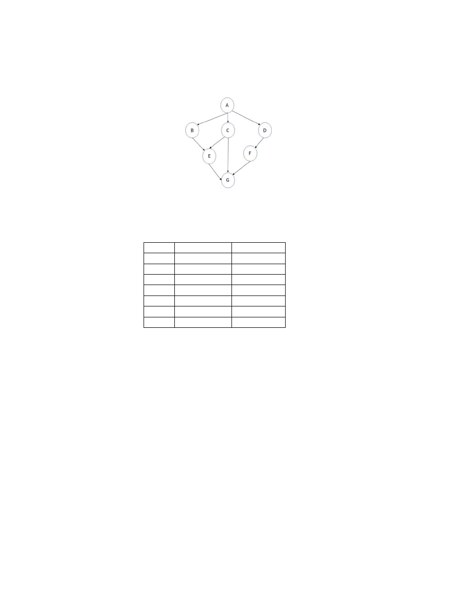
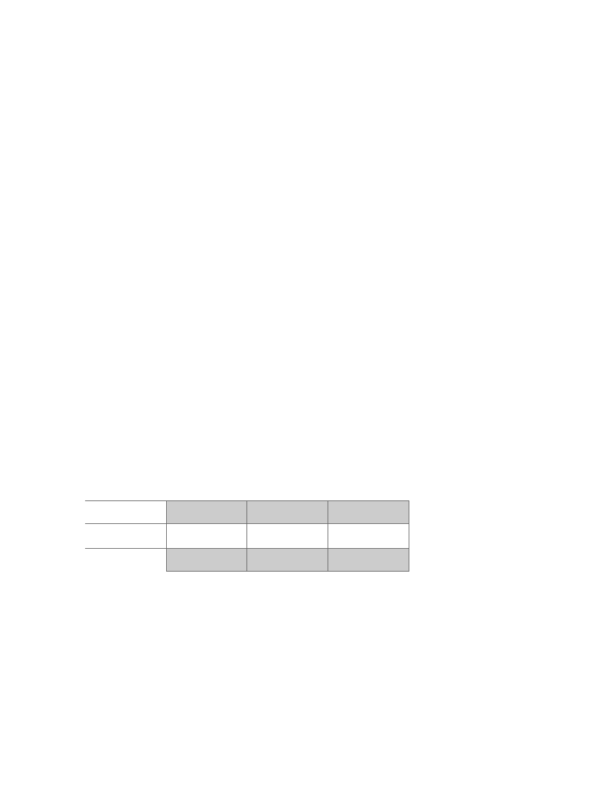

CSCI-UA.0480-051: Parallel Computing
Midterm Exam (Mar 14
th
, 2024)
Total: 100 points
Important Notes-
READ BEFORE SOLVING THE EXAM
•
If you perceive any ambiguity in any of the questions, state your assumptions clearly
and solve the problem based on your assumptions. We will grade both your
solutions and your assumptions.
•
This exam is take-home.
•
The exam is posted on Brightspace, at the beginning of the March 14
th
lecture (2pm
EST).
•
You have up to 24 hours to submit on Brightspace (i.e. till March 15
th
2pm EST), in
the same way as you submit an assignment. However,
unlike assignments, you can
only submit once
.
•
Your answers must be very focused. You may be penalized for giving wrong
answers and for putting irrelevant information in your answers.
•
Your answer sheet must be organized as follows:
-
The very first page of your answer must contain only
:
▪
You Last Name
▪
Your First Name
▪
Your NetID
▪
Copy and paste the honor code shown in the rectangle at the bottom
of this page.
-
In your answer sheet,
answer one problem per page
. The exam has four
main problems, each one must be answered in a separate page.
•
This exam consists of 4 problems, with a total of 100 points.
•
Your answers can be typed or written by hand (but with clear handwriting). It is up
to you. But
you must upload one pdf file containing all your answers
.
Honor code (copy and paste to the first page of your exam)
•
You may use the textbook, slides, the class recorded lectures, the information in the
discussion forums of the class on Brightspace, and any notes you have. But you may not
use the internet.
•
You may NOT use communication tools to collaborate with other humans. This includes
but is not limited to Google-Chat, Messenger, E-mail, etc.
•
You cannot use LLMs such as chatGPT, Gemini, Bard, etc.
•
Do not try to search for answers on the internet, it will show in your answer, and you will
earn an immediate grade of 0.
•
Anyone found sharing answers, communicating with another student, searching the
internet, or using prohibited tools (as mentioned above) during the exam period will earn
an immediate grade of 0.
•
“I understand the ground rules and agree to abide by them. I will not share answers
or assist another student during this exam, nor will I seek assistance from another
student or attempt to view their answers.”

Problem 1
a. [10] Suppose we have a core with only pipelining (i.e. no superscalar or
hyperthreading). Will this core benefit from having more execution units? Justify your
answer in 1-2 lines.
b. [10] Can several processes be executed on a shared memory machine? If yes explain
how, in 1-2 lines. If not, explain why not.
c. [10] Can several threads, belonging to the same process, be executed on a distributed
memory machine and get the same performance as when executed on a multicore? If yes
explain how, in 1-2 lines. If not, explain why not. Assume each node of the distributed
machine has one CPU only.
d. [6] If we have a four-way hyperthreading core, how many branch predictors do we
need to get the best performance? Justify.

Problem 2
Suppose we have the following DAG that represents different tasks and their
dependencies.
The following table shows the execution time of each task if we execute it on a core of
type A and if we execute it on core of type B. Each CPU type is optimized for some type
of operations. That is, one type of CPU is not always faster than the other type for all
tasks. You can ignore communication overhead among tasks.
Task
CPU type A CPU type B
A
5
5
B
10
5
C
20
30
D
30
25
E
10
15
F
10
5
G
5
10
a. [10] What is the minimum number of CPUs of each type that we need to get the
highest speedup over sequential execution on CPU of type A? Show which CPU will
execute which task(s) and calculate the final speedup.
b. [10] Repeat the problem above but using CPU of type B.
c. [10] Using better algorithm/programming, we can enhance the DAG a bit by removing
an arrow. Removing an arrow means less dependency and potential better performance. If
you were allowed to remove one arrow from the above DAG, which one would you
remove? And why?

Problem 3
Suppose that MPI COMM WORLD consists of the three processes 0,1, and 2, and
suppose the following code is executed after MPI has been initialized (my_rank contains
the rank of the executing process):
int x, y, z;
switch(my_rank) {
case 0:
x=1; y=1; z=3;
MPI_Bcast(&x, 1, MPI_INT, 0, MPI_COMM_WORLD);
MPI_Send(&y, 1, MPI_INT, 2, 4, MPI_COMM_WORLD);
MPI_Bcast(&z, 1, MPI_INT, 1, MPI_COMM_WORLD);
break;
case 1:
x=5; y=7; z=5;
MPI_Bcast(&x, 1, MPI_INT, 0, MPI_COMM_WORLD);
MPI_Bcast(&y, 1, MPI_INT, 1, MPI_COMM_WORLD);
break;
case 2:
x=8; y=7; z=8;
MPI_Bcast(&z, 1, MPI_INT, 0, MPI_COMM_WORLD);
MPI_Recv(&x, 1, MPI_INT, 0, 4, MPI_COMM_WORLD, &status);
MPI_Bcast(&y, 1, MPI_INT, 1, MPI_COMM_WORLD);
break;
}
a. [9 points] What will be the values of x, y, and z for each of the 3 processes after
executing the above code?
Po
P1
P2
X
Y
Z
b. [5] Is there a possibility that the communication among the 3 processes executes out of
order? If yes, explain the reason. If not, why not?
c. [5] What will happen if we execute the above code with: mpiexec –n 4
d. [5] What will happen if we change “case 2:” to “default”?

Problem 4
a. [5] If we have an embarrassingly-parallel application. Does it have good scalability
(i.e. as we keep increasing the number of cores, do we see speedup)? Assume the
problem size is big enough.
b. [5] If we have two threads that have different types and number of computations. And
we assign each thread to a core. Does this necessarily mean we have load imbalance?
Explain.